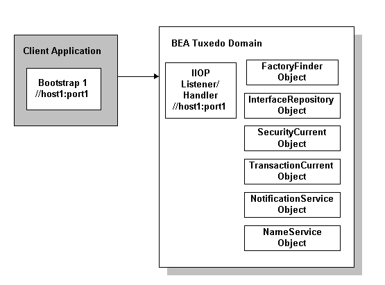
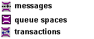

|
|
The Oracle Tuxedo Administration Console is a Java-based applet that you can download from your company Web server into your Java enabled Web browser. The Oracle Tuxedo Administration Console enables you to manage your Oracle Tuxedo system administrative resources with the convenience of Web access.
This topic includes the following sections:
Figure 2-1 illustrates the Oracle Tuxedo Administration Console main window. The main window consists of the following views:
The initial Oracle Tuxedo Administration Console window may only display empty panes and some toolbar buttons and menu bar items may be disabled. To access the Oracle Tuxedo system resources for system administration, you need to establish a connection to a domain or have domain connections specified in your initialization file. For more information refer to the section, Oracle Administration Console Product Overview on page 1-1
The following items are unavailable until you establish a domain connection:
As shown in Figure 2-1, after you have set up and activated a domain, the Oracle Tuxedo Administration Console populates the Tree View pane with labeled icons, representing the administrative class objects in a domain. When you start using the Configuration Tool, the Oracle Tuxedo Administration Console displays tabbed pages in the Configuration Tool pane that enable you to specify configuration information.
If you want more display space for the Tree View pane or the Configuration Tool pane, you can adjust the width of either area by doing the following:
This section describes the parts of the main window and the actions available from the main window menus, toolbar buttons, Tree View objects, and Configuration Tool.
Figure 2-1 shows an Oracle Tuxedo Administration Console that has an established domain connection. Table 2-1 describes the major parts of the Main Window.
The following topics describe each of these major parts in more detail.
The Menu bar appears at the top left side of the Oracle Tuxedo Administration Console main window. Table 2-2 describes the available menu actions.
| Note: | Unless specified otherwise, the phrase click means to quickly press and release the left mouse button. |
The Domain menu contains options for specifying the domain (Oracle Tuxedo application) you will work with. This menu has the following options:
|
|
|
|
|
The Tools menu contains the same options provided by the toolbar buttons. For more information, refer to the section
Toolbar Buttons on page 2-7.
|
|
Throughout this online help, a menu choice is indicated in the following form:
For example, an instruction to "Click Domain—>New" means click the Domain menu to display the menu items, and then click New to select the command.
<a name="P_STOP"></a>
<a name="P_REFRESH"></a>
<a name="P_SEARCH"></a>
<a name="P_ACTIVATE"></a>
<a name="P_DEACTIVATE"></a>
<a name="P_MIGRATE"></a>
<a name="P_ULOG"></a>
<a name="P_EVENT"></a>
<a name="P_STATS"></a>
<a name="P_SETTINGS"></a>
<a name="P_CSHELP">
</a> <a name="P_HELP"></a>
The toolbar appears across the top of the main window, immediately below the menu bar.
Table 2-3 describes the toolbar buttons available for frequently used administrative operations.
Table 2-3 Administrative Operations
The Tree View pane appears in the left column of the main GUI window. The tree is a hierarchical representation of the administrative objects in a single Oracle Tuxedo system domain. The GUI graphically depicts the relationship between each object and the others by showing its nesting level and parent objects. You can choose to view a complete tree (comprising all configurable objects of all types in the domain) or a subset of objects.
Figure 2-2 shows the Tree View displayed in the main window.
You can add or omit items from the Tree View. In addition, you can add or omit items from the display. By default, the Tree View displays all administrative classes available for a selected domain.
The Oracle Tuxedo Administration Console Tree View contains multiple roots, one root for each administrative object. The first root consists of the application domain. The next root displays the object classes defined in the Oracle Tuxedo TMIB. Each set of object classes is a part of an application domain. The third level represents an instance of an object belonging to an object class.
The Oracle Tuxedo Administration Console can display only one domain at a time. The current domain is represented in the Tree View as multiple sets of object classes containing administrative objects. The Oracle Tuxedo Administration Console gives you control over which object classes and objects are displayed for a domain through a combination of the collapsible tree structure and a Folders checklist dialog.
Figure 2-3 shows the top part of the sample tree shown in Figure 2-2. (Machines, Groups, Servers, Routing Tables, and so on, are examples of object classes. The FML and VIEW tables shown under Routing Tables are examples of objects belonging to the Routing Tables class.)
The following sections describe all the administrative objects that can appear in the Tree View.
Table 2-4 lists the domain and class parts of the Tree View, their associated icons, and briefly describes each part.
Table 2-4 Tree View|

|
||
|
|
The folder icon and administrative name represent each object class (such as Machines, Servers, Clients, Factories, and so forth).
|
Table 2-5 describes the individual objects contained within a Oracle Tuxedo system TMIB class and their associated icons.
Table 2-5 TMIB Class
Table 2-6 describes the individual application queue and related class objects contained within a Oracle Tuxedo system TMIB class and their associated icons.
Table 2-6 TMIB Class|
|
||
|

|
||

|
Table 2-7 lists the individual Oracle Tuxedo CORBA administrative class objects and their associated icons.
Table 2-7 CORBA Administrative Class

|
||
|
|
||
|
|
Figure 2-4 illustrates an expanded tree for the sample simpapp domain. The Groups folder only contains one object GROUP1 and is fully expanded as shown by the minus (-) sign next to the Groups icon. However, GROUP1 contains more items as indicated by the plus (+) sign.
To display a domain tree, on the menu bar click Domain —>DomainName and select a domain. (You can also click Domain—>Open to bring up the Connect window and enter a Domain Name and TUXCONFIG path.) To expand the domain tree or any section of the domain tree, click the plus (+) sign next to the tree item.
| Note: | The plus (+) sign next to a tree icon changes to a minus (-) sign when the tree cannot be expanded further. |
To collapse any section of the tree, click the minus sign beside any expanded tree item. Click the minus sign beside the domain icon and the Tree View displays only the domain icon and name.
To find a specific object in the Tree View, click the Search toolbar button. The Oracle Tuxedo Administration Console displays a Find dialog. Enter the name (or partial name) of the object you want to find and click the Next or Previous buttons to search forward or backward through the objects in the tree.
The Oracle Tuxedo Administration Console Tree View contains a convenient shortcut menu that lets you quickly select frequently performed tasks. This Quick Menu includes options for creating new objects, activating and deactivating applications and application resources, as well as other administrative tasks.
To display the Quick Menu, right-click any object in the Tree View item (domain, class, or object) and the Quick Menu is displayed in the Tree View area.
If you select an option from the Quick Menu, the Quick Menu closes and the window associated with the selected option is displayed.
To close the Quick Menu without selecting a menu item, click an area of the main window outside the Quick Menu.
Figure 2-5 illustrates a sample pop-up Quick Menu.
The Oracle Tuxedo Administration Console always displays the Quick Menu in the Tree View area. The Quick Menu options invoke windows and dialog boxes, or toggle between modes. What you see on the Quick Menu depends upon which item the pointer is positioned on the tree.
Table 2-8 provides a quick list of what the Quick Menu displays for each type of tree item.
The options vary for each type of selected object. Each administrative object has a subset of all options.
Table 2-9 contains a complete list of all possible Quick Menu options.
|
To perform most Oracle Tuxedo system operations, you can select options from the Quick Menu that displays when you right-click a tree object. The options available in the Quick Menu vary depending upon the object class.
Table 2-9 briefly describes all the menu options listed on the collective set of Quick Menus. No single Quick Menu offers all these operations; a single Quick Menu includes a subset of these options. Click the menu option to perform the operation for that domain, object class, or individual object.
Display the tab pages containing detailed configuration information about a selected object in read-only (or View) mode. For more information, refer to the section
Switching Edit and View Modes on page 3-4.
|
|
Display the tab pages containing detailed configuration information about a selected object in Edit mode. (You can use this option to override a default View mode setting for the session and change the attributes for the selected object. For more information, refer to
Switching Edit and View Modes on page 3-4.)
|
|
To create a new Oracle Tuxedo system object, right-click the desired object class in the Tree View to display the Quick Menu, and then click New. The Create New Object window is displayed prompting you to enter required information about the new object. For detailed information about filling in these fields, see Chapter 3, “Creating New Domains and Administrative Class Objects.”
You can use the Quick Menu Folders option to customize your view of the tree so that only the type(s) of objects you want to see are displayed.
You can use the Quick Menu Folders option to do the following tasks:
To use the Folders option, complete the following steps:
| Note: | The items shown in the Select Folders window will vary, depending on which type of object you have selected in the tree. |
Figure 2-6 shows the Select Folders window for domains.
The Configuration Tool is a utility that lets you set or change the attributes for a selected class of Oracle Tuxedo system objects. When you select an object in the tree, the Configuration Tool pane for that object is displayed on the right side of the main window. As illustrated in Figure 2-7, the Configuration Tool pane keeps the attributes for each object in a set of tabbed pages.
The Configuration Tool pane displays a set of tab pages for your application resources and for each class of objects and services shown in the Oracle Tuxedo Administration Console Tree View.
Each collection of tabbed pages is a set of logically grouped attributes. For example, the Domains class Security tab pages contain the settings for user IDs, group IDs, and the type of security to be used in that domain.
To access the Configuration Tool from the tree:
The Configuration Tool consists of a set of tab pages and a row of buttons for controlling the changes you make in the tab pages.
The tab pages in the Configuration Tool pane are electronic forms that display and solicit (from you) information about the attributes of an administrative object.
A set of tab pages is provided for each administrative class of objects (such as machines and servers). The number of attributes associated with a class varies, depending on the class. Therefore, anywhere from one to eight tab pages may be displayed when you invoke the Configuration Tool by selecting an object in the tree.
To display a set of tab pages select an object in the tree by clicking on it.
The Configuration Tool pane displays the tab pages available for the object you have selected, as shown in Figure 2-8.
Use the buttons at the bottom of the Configuration Tool pane to implement the changes you make in the tab pages.
<a name=T_GENERAL></a>


|